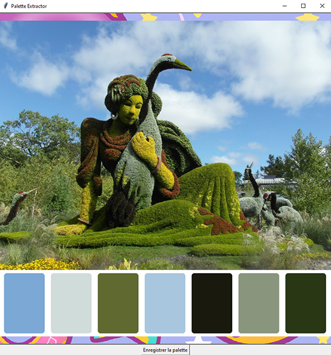

Cet outil est destiné à la photographie ou la vidéo. il permet la création de LUT ou même de facilité le color grading pour obtenir le "look" d'une oeuvre.
Il fait une moyenne des couleurs proéminentes d'une image pour en obtenir une palette de 7 couleurs. On peut glisser et déposer une image (de n'importe quelle résolution) et ensuite l'enregistrer avec la palette ajouté
Technologies utilisées : PYTHON

 Github : https://github.com/Thesirix/Color-Palette
Github : https://github.com/Thesirix/Color-Palette